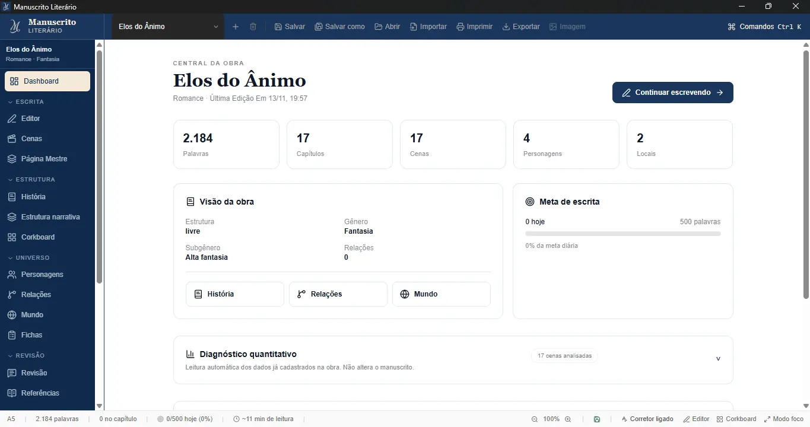
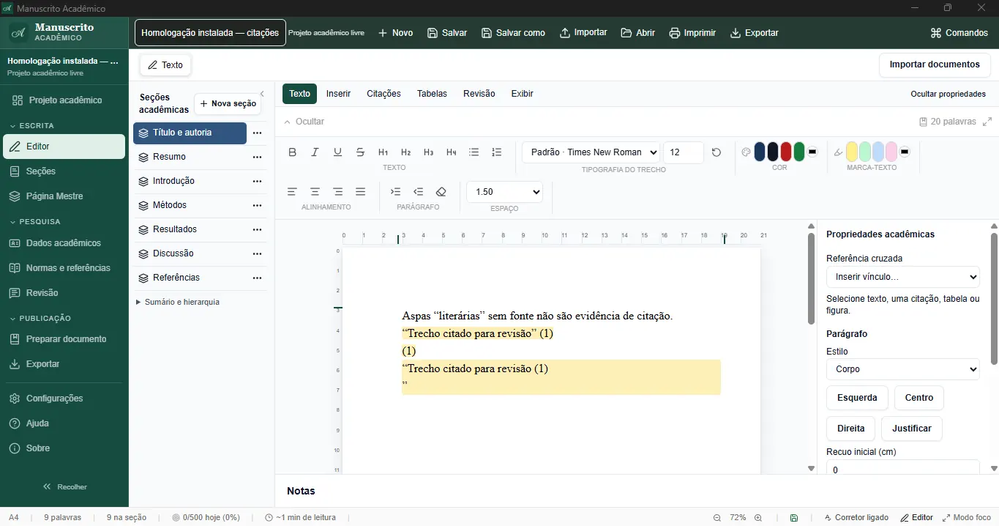
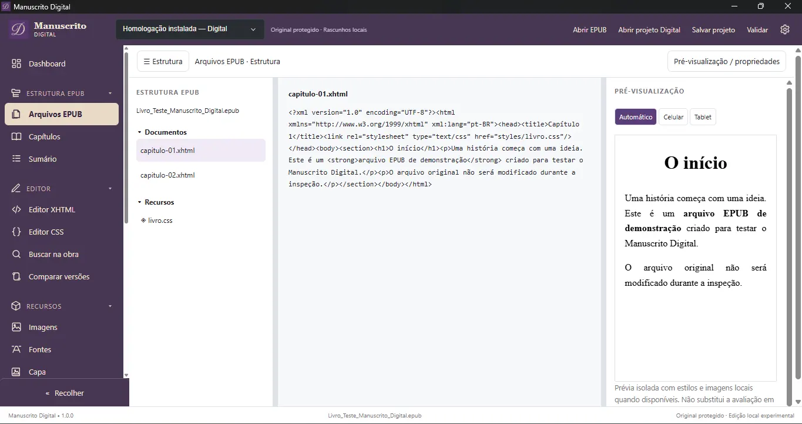

Mais que ferramentas. Um ecossistema para suas ideias.
Escreva. Organize. Desenvolva. Publique.
Tecnologia para escrever, pesquisar, editar e publicar.
Conheça uma família de softwares desenvolvida para acompanhar diferentes etapas da produção intelectual e editorial. Diagramação e design editorial estão em planejamento.
Uma família de ferramentas. Diferentes possibilidades.

Escrita e roteiro
Manuscrito Literário
Software para escritores e roteiristas, que permite organizar projetos literários do primeiro esboço à exportação.
Conhecer o produto →
Pesquisa e produção científica
Manuscrito Acadêmico
Software para pesquisa e produção acadêmica e científica, voltado à elaboração e à organização de trabalhos.
Conhecer o produto →
Edição de livros digitais
Manuscrito Digital
Software para edição e preparação de livros digitais.
Conhecer o produto →Ainda não estão disponíveis. O Manuscrito Estúdio será desenvolvido primeiro; o Manuscrito Diagrama, mais complexo, virá depois.
Diferentes ferramentas. Um mesmo ecossistema.
A Manuscrito Suite reúne os softwares Manuscrito em uma estrutura integrada, permitindo instalar e utilizar diferentes módulos de acordo com suas necessidades.
Feito para acompanhar seu trabalho.
Os softwares Manuscrito são atualmente desenvolvidos para Windows.
Linux e macOS são plataformas planejadas para expansão futura e ainda não estão disponíveis.
Tecnologia a serviço da criação e da produção de conhecimento.
A Manuscrito nasceu da proposta de desenvolver ferramentas especializadas para diferentes etapas da produção intelectual e editorial.
Mais do que reunir funcionalidades, buscamos construir um ecossistema no qual cada aplicação tenha uma finalidade clara e contribua para o desenvolvimento de projetos criativos, acadêmicos e editoriais.
Nossa proposta é aproximar tecnologia, conhecimento e criação, oferecendo ferramentas que acompanhem o usuário desde a organização inicial de suas ideias até a preparação de seus projetos para publicação.
Encontre suas ferramentas. Desenvolva suas possibilidades.
Conheça os softwares Manuscrito e descubra como nossas ferramentas podem acompanhar seus projetos.